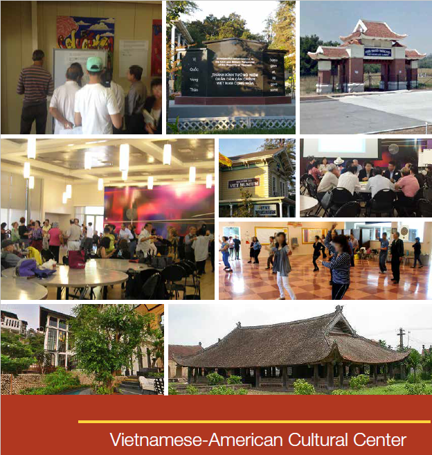

This initiative will develop support and financial resources for the Vietnamese American Cultural Center. In particular, the Capital Campaign twill raise funds for an interim Vietnamese American Cultural Center (VACC) at the current Shirakawa Community Center in the short-term. We are also looking for opportunities to build the permanent VACC Center at Kelly Park.
The VACC is a place to promote and preserve Vietnamese culture and values by providing educational, cultural, and social programs and services benefiting the Vietnamese American community. Since its inception in October 2016, the VACC has organized 69 events with over 9,000 attendees and 54,000 participants in the weekly activities.
Read the community feasibility study.
To learn more, volunteer, donate or partner on this initiative, please fill out this form: Strategic Initiatives and Budget Form or contact Anna Le at 408-795-3116.